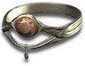

Heyday

Gillian's Tiara
Tiara
Defense: 40-50
Required Level: 82
+100-200 Defense
+2 to Fire Skills
+15-20% to Fire Skill Damage
-10 to -15% to Enemy Fire Resistance
+50% Fire Resistance
-50% Cold Resistance
Requirements Increased By 30%
Unique Circlet
Gillian's Tiara
- Type
- Circlet
- Base
- Tiara
- Tier
- Exceptional
- Required level
- 82
- Item level
- 80
- Required dexterity
- 60
- Max sockets
- 3